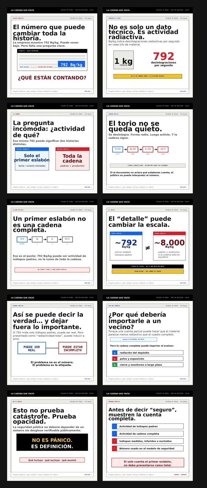

La Cadena que Falta

About
A ten-image public-communication series (1080×1080, Spanish) on the radioactive deposit at Penco, Chile. The question it arms a non-technical reader with: a single radioactivity number is not an answer until you know what it counts.
The argument
The company reports 792 Bq/kg. If that figure counts only the parent isotopes (the first link of the decay chain, e.g. Th-232 → Ra-228 → Ac-228 → …), it is not the total activity of the chain — a full-chain accounting sits on a different order of magnitude (~8,000 Bq/kg in the series' worked example). A truthful number, presented without its definition, can still mislead.
The demand: before saying "safe", publish the complete count — parent isotopes, chain total, what is included, what is excluded, what was assumed.
No es pánico. Es definición.
Form
Final version v11, ten slides, QA-verified. Built as an Instagram series; the contact sheet shows the full sequence.
Related: Radiological Literacy.